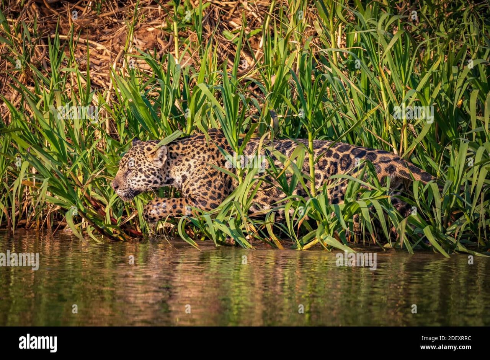
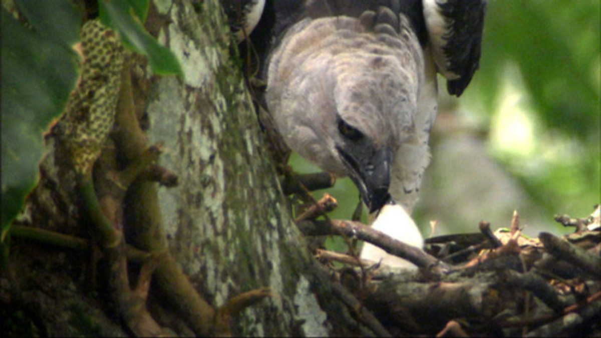
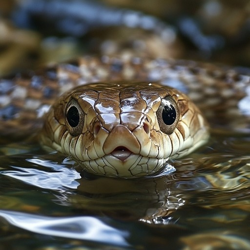

Deep within the heart of the jungle, an unseen battle for survival takes place daily. Predation,the art of hunting and being hunted,is a fundamental force that shapes the delicate balance of this wild ecosystem. From the stealthy jaguar to the patient anaconda, predators use unique adaptations to catch their prey, ensuring the jungle remains a thriving, dynamic environment.
The Masters of Stealth and Speed
At dawn, a jaguar silently stalks its prey,an unsuspecting capybara drinking by the river. With a powerful leap, the jaguar pounces, securing its meal for the day.

Elsewhere, a harpy eagle soars high above the canopy, its sharp eyes scanning for monkeys or sloths to snatch with its massive talons. Meanwhile, in the undergrowth, a green anaconda coils patiently in the water, waiting for an unlucky caiman to swim too close.
 